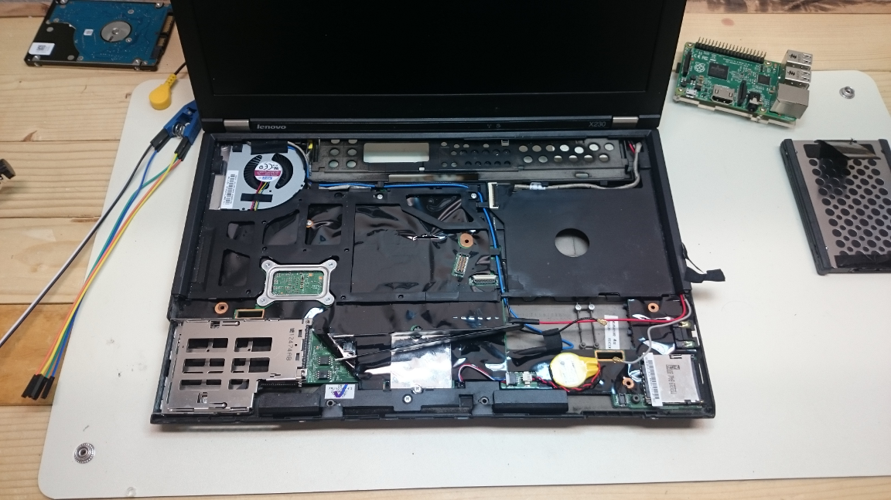
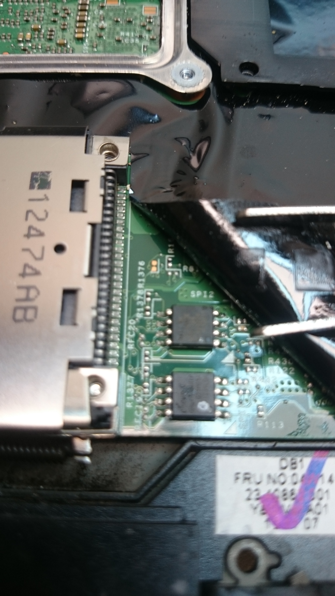
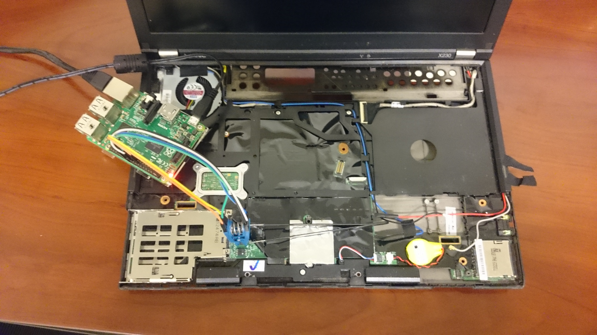

Coreboot for x230
Table of Contents
In this post, we will go through the steps to get coreboot compiled and installed on a Lenovo x230 laptop. This is a somewhat lengthy and involved process that is not for the faint of heart. It is very possible to ruin or otherwise brick your laptop performing these steps improperly or even properly! You have been warned.

Coreboot
coreboot is an extended firmware platform that delivers a lightning fast and secure boot experience on modern computers and embedded systems --coreboot project
Coreboot is an OpenSource firmware alternative that supports a number of modern computers and embedded systems. It can replace your system's BIOS with a faster and more secure platform. It can be preloaded with a number of payloads, e.g., SeaBIOS or tianocore, and/or it can come with some additional payloads, e.g., memtest86+.
Motivation
Why replace the default BIOS image in the first place? There are several motivations for doing this. For one, it's well documented that Lenovo installs a device whitelist onto its systems, disabling the computer if a third-party peripheral is installed, which can include WiFi cards and SSD's. If you're more adventurous and want to replace the x230 screen with that of an x240, the whitelist will also get in the way. By replacing the BIOS entirely, this whitelist problem will be avoided.
Furthermore, in older laptops, x200/1 for example, it's possible to replace the disastrous Intel ME platform. This is, unfortunately, (currently) impossible on the x230 and later. That is, removing the ME code will make the laptop effectively unusable.
Necessary Equipment
Before we go into the actual steps, let's take a moment to gather all the necessary equipment. Disassembly is necessary because the BIOS chip is locked and not accessible from software flashers like flashrom. However, desoldering will not be necessary.
SPI Flash Programmer
This guide will perform the ROM flashing via the GPIO headers of a Raspberry Pi 2 (RPI-1 should work, but different pinouts are required).
-
This clip will be used for interfacing with the BIOS chip and the SPI programmer. They are sometimes available for less (with longer shipping times) from eBay.
Some short cables
These cables will connect the SOIC chip to the GPIO headers of the Raspberry Pi. It is important that they are short, no more than 25cm or so.
-
After not having these for too long, I can't recommend these enough for opening up laptops and other devices.
A precision Phillips screwdriver
A percision set will be better, used for disassembling the laptop.
A magnifying lens
The specific chip found in your x230 may be different from mine. A magnifying lens will be helpful in determining the exact version.
Disassembly and BIOS Access
Steps and manuals for disassembling the laptop can be found with a simple search. However, it's only necessary to remove the keyboard and the palm rest to gain access to the BIOS chip. Of course, remove the battery and power supply before opening the laptop. I personally, removed the hard drive and WiFi card as well, I wanted nothing attached while working.

You will notice there are two chips in the above figure. The combination of these two chips is what makes up the BIOS (and the Intel ME) for the x230. We will be dealing exclusively with the /top chip/ (one closest to the screen).
Once we have physical access to the top chip, use the magnifying glass to read the tiny print of the chip. We need to know the precise version of the chip to remove any future guesswork from the process, especially for disaster recovery.
If you are unable to read the version of the chip, there are steps we can take to proceed, but it will be far more tedious and less comfortable.
Connecting the Raspberry Pi to the SOIC Clip
Next, we will be connecting the Raspberry Pi with the cables and clips to the BIOS chip.
I found this to be the most difficult of the entire process. Finding a solid source for the documentation on the chip and the GPIO headers was incredibly difficult the first time around.
First, get GPIO header diagram for your Raspberry Pi model.
Next, cross-reference the header diagram with your chip's spec sheet. It should be in the list at All Data Sheet. Specifically, I found mine here. It's very likely, yours will be similar. Cross reference the "Pin Configuration" page with the GPIO header diagram to discern the proper connections.
The pin arrangement that I used was the following (using the notch on the chip for starting):
- 1: GPIO 26
- 2: GPIO 19
- 3: Not Connected
- 4: GPIO 17
- 5: GPIO 21
- 6: GPIO 23
- 7: Not Connected
- 8: GPIO 25
Using the Raspberry Pi

Before connecting the clip, it's imperative to remove all external power sources. The Raspberry Pi will be providing power to the ROM chip, any external current can and most likely will brick your laptop.
Attach the clip to the chip and power on the Raspberry Pi. Before you are able
to read the chip, you may need to install flashrom and ensure
your kernel has SPI enabled. Most distributions will have it on by default. An
easy way to check is to list the contents of /dev and look for spi devices,
since the chip is connected, there should be one.
Before we begin the process of flashing, let's inspect the ROM itself. First, simply run flashrom, specifying the SPI device as the programmer:
# flashrom --programmer linux_spi:dev=/dev/spidev0.0 flashrom v0.9.9-r1955 on Linux 4.4.10-1-ARCH (armv7l) flashrom is free software, get the source code at https://flashrom.org Calibrating delay loop... OK. Found Macronix flash chip "MX25L3205(A)" (4096 kB, SPI) on linux_spi. Found Macronix flash chip "MX25L3205D/MX25L3208D" (4096 kB, SPI) on linux_spi. Found Macronix flash chip "MX25L3206E/MX25L3208E" (4096 kB, SPI) on linux_spi. Found Macronix flash chip "MX25L3273E" (4096 kB, SPI) on linux_spi. Multiple flash chip definitions match the detected chip(s): "MX25L3205(A)", "MX25L3205D/MX25L3208D", "MX25L3206E/MX25L3208E", "MX25L3273E" Please specify which chip definition to use with the -c <chipname> option.
If you are seeing numbers like 8192 kB, you're reading the wrong chip! Disconnect and attach to the other.
If you were able to read the chip number, pass it along, and try again:
# flashrom --programmer linux_spi:dev=/dev/spidev0.0 \
--chip "MX25L3206E/MX25L3208E"
flashrom v0.9.9-r1955 on Linux 4.4.10-1-ARCH (armv7l)
flashrom is free software, get the source code at https://flashrom.org
Calibrating delay loop... OK.
Found Macronix flash chip "MX25L3206E/MX25L3208E" (4096 kB, SPI) on linux_spi.
Now, we will want to create a back up image of the ROM, but we also want to verify we are reading correctly:
# flashrom --programmer linux_spi:dev=/dev/spidev0.0 \
--chip "MX25L3206E/MX25L3208E" \
--read original.1.rom
flashrom v0.9.9-r1955 on Linux 4.4.10-1-ARCH (armv7l)
flashrom is free software, get the source code at https://flashrom.org
Calibrating delay loop... OK.
Found Macronix flash chip "MX25L3206E/MX25L3208E" (4096 kB, SPI) on linux_spi.
Reading flash... done.
# flashrom --programmer linux_spi:dev=/dev/spidev0.0 \
--chip "MX25L3206E/MX25L3208E" \
--read original.2.rom
flashrom v0.9.9-r1955 on Linux 4.4.10-1-ARCH (armv7l)
flashrom is free software, get the source code at https://flashrom.org
Calibrating delay loop... OK.
Found Macronix flash chip "MX25L3206E/MX25L3208E" (4096 kB, SPI) on linux_spi.
Reading flash... done.
# diff original.1.rom original.2.rom
Again, if the size of
original.1.romandoriginal.2.romare 8MB, you're reading the wrong chip, move the clip to the other chip and repeat the above steps!
If you get no output from the last command, we should be set, or it means we're reading both incorrectly. However, it's more likely flashrom will complain first.
Keep at least one of the images around just in case this fails and you need to attempt recovery.
If you were unable to read the serial number off the chip, perform the read 4 to 8 times, once or twice for each chip type.
Configuration and Compilation
Half the battle to getting Coreboot onto your system is properly putting together the build-tools and compiling the coreboot image. There already exists a guide for configuring and building the Coreboot tool-chain, but for completeness, the basic steps will be copied here.
I'll assume a certain comfortability with GNU/Linux and the GNU GCC and Make tools.
First up, get a copy of the Coreboot Source:
% git clone --recursive https://review.coreboot.org/coreboot.git
This will get the latest source code of the Coreboot project and also initialize the project's submodules.
Next, we will need to download the blobs archive:
% curl -SLO https://www.coreboot.org/releases/coreboot-blobs-4.5.tar.xz
The link can be found from the Coreboot Downloads page.
Now, unpack the blobs into the coreboot/3rdparty/blobs folder:
% tar -xf coreboot-blobs-4.5.tar.xz --strip-components=1 -C coreboot
Now, we can move onto configuring the tool-chain, building the tool-chain, and finally building the coreboot image itself.
Configuration
% cd coreboot
We'll start by configuring the compile options for coreboot:
± make menuconfig
OR
± make nconfig
Set the following options:
general --|
|-[*] Compress ramstage with LZMA
|-[*] Include the coreboot .config file into the ROM image
mainboard -|
|-Mainboard vendor (Lenovo)
|-Mainboard model (ThinkPad X230)
|-ROM chip size (12288 KB (12 MB))
|-(0x100000) Size of CBFS filesystem in ROM
devices ---|
|-[*] Use native graphics initialization
generic ---|
|-[*] PS/2 keyboard init
console ---|
|-[*] Squelch AP CPUs from early console.
|-[*] Send console output to a CBMEM buffer
|-[*] Send POST codes to an external device
|-[*] Send POST codes to an IO port
sys table -|
|-[*] Generate SMBIOS tables
payload ---|
|-Add a payload (SeaBIOS)
|-SeaBIOS version (master)
|-(10) PS/2 keyboard controller initialization timeout (milliseconds)
|-[*] Hardware init during option ROM execution
|-[*] Include generated option rom that implements legacy VGA BIOS compatibility
|-[*] Use LZMA compression for payloads
These configuration options were borrowed from Unix Blather.
Compilation
If you were thinking of compiling the ROM on the Pi, I recommend you reconsider. If you have an exorbitant amount of time to kill, go for it, but you'll prefer a machine with more power.
From here, we can build the tool-chain:
± make crossgcc-x64 CPUS=$(nproc)
This will only build the tool-chain for the x64 architecture, update as necessary.
CPUS=# is used to specify the parallelization of the tool-build. This is
unfortunately different from the usual --jobs|-j argument of make, but has
the same effect.
Now, we can build the coreboot image itself:
± make -j$(nproc)
This will create build/coreboot.rom image.
However, this will not be the image we flash onto our laptop! Because the
Lenovo x230 comes with the nasty Intel ME and we built the
coreboot image using a stub for the Intel ME section, we need to create a new
image that contains only the Coreboot contents. To do this, we will use dd
to skip the first 8MB of the image, and only grab the last 4:
± dd if=build/coreboot.rom bs=1M of=/tmp/x230.rom skip=8
This will create a 4MB file in /tmp/ named x230.rom. Finally, copy the new
image to the Raspberry Pi.
Flashing the New Image
After the image is copied to the Pi, we can use flashrom to write the new image:
# flashrom --programmer linux_spi:dev=/dev/spidev0.0
--chip "MX25L3206E/MX25L3208E"
--write /tmp/x230.rom
flashrom v0.9.9-r1955 on Linux 4.4.10-1-ARCH (armv7l)
flashrom is free software, get the source code at https://flashrom.org
Calibrating delay loop... OK.
Found Macronix flash chip "MX25L3206E/MX25L3208E" (4096 kB, SPI) on linux_spi.
Reading old flash chip contents... done.
Erasing and writing flash chip... Erase/write done.
Verifying flash... VERIFIED.
Flashrom will read back the new contents and verify it was successful, however,
I like the comfort of having done this myself. This can be accomplished two
ways: using flashrom's --verify option, or reading the image and running
diff:
# flashrom --programmer linux_spi:dev=/dev/spidev0.0
--chip "MX25L3206E/MX25L3208E"
--verify /tmp/x230.rom
flashrom v0.9.9-r1955 on Linux 4.4.10-1-ARCH (armv7l)
flashrom is free software, get the source code at https://flashrom.org
Calibrating delay loop... OK.
Found Macronix flash chip "MX25L3206E/MX25L3208E" (4096 kB, SPI) on linux_spi.
Reading old flash chip contents... done.
Verifying flash... VERIFIED.
OR
# flashrom --programmer linux_spi:dev=/dev/spidev0.0 \
--chip "MX25L3206E/MX25L3208E" \
--read /tmp/x230.2.rom
flashrom v0.9.9-r1955 on Linux 4.4.10-1-ARCH (armv7l)
flashrom is free software, get the source code at https://flashrom.org
Calibrating delay loop... OK.
Found Macronix flash chip "MX25L3206E/MX25L3208E" (4096 kB, SPI) on linux_spi.
Reading flash... done.
# diff /tmp/x230.rom /tmp/x230.2.rom
If you get "VERIFIED" or no output, respectively, the contents of the BIOS chip should be replaced with the Coreboot image.
All that's next is to disconnect the chip, reassemble the laptop and hope it works!
Common Problems
If you're having issues flashing or reading your BIOS, check the following:
- The chip is getting sufficient power
- The wires used to connect the Raspberry Pi and the chip are not too long
- Make sure your pinout is correct
For some more information, check Flashrom's in system programming.
Summary and Auxiliary Advice
Hopefully, you're now booting into your x230 with Coreboot. Enjoy your new BIOS, whitelist free and awesome!
However, if you have issues, e.g., the flashing doesn't go as planned: DO NOT POWER OFF THE CHIP! Get help from the #coreboot IRC channel on freenode or email the mailing list.